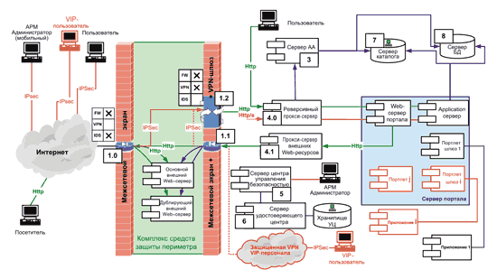

Виталий Зорин,
системный аналитик "Элвис-Плюс", к. т. н.
zorin@elvis.ru
История вопроса
Примерно шесть лет назад наша компания "Элвис-Плюс" (http://www.elvis.ru) выиграла тендер на разработку информационно-аналитической системы для Центрального аппарата Банка России (ЦА БР), которая должна была интегрировать информационные ресурсы и обеспечивать защищенный доступ ко всем основным информационным системам. В качестве интеграционного решения была выбрана интранет-технология как единственный реальный способ объединить все системы, построенные на различных платформах, использующих разные операционные среды, базы данных и приложения. Что же касается портальной архитектуры, то тогда, в 1997 г., такой термин еще не был распространен. Но фактически в 1997-1998 гг. в Банке России в рамках проекта "Информационно-аналитическая система руководства ЦБ РФ (первая очередь)" был разработан и протестирован первый защищенный интранет-портал.
Система обеспечения безопасности информации (СОБИ) этого портала включала следующие основные элементы:
- сервер доступа;
- брокер услуг на основе прокси-сервера;
- агенты идентификации пользователей, использующие смарт-карту.
На сетевом уровне безопасность передаваемой информации обеспечивалась за счет VPN-агентов "Застава", устанавливаемых на всех серверах портала и рабочих станциях пользователей. Для аутентификации субъекта доступа использовался агент идентификации, устанавливаемый на рабочей станции пользователя. Агент опрашивал смарт-карту, определял, установлен ли VPN-агент, загружал сертификат и ключ пользователя в VPN-агент и от имени пользователя запрашивал на сервере доступа конкретный информационный ресурс портала. В процессе запроса сервер доступа формировал уникальный билет доступа к данному ресурсу в форме пакета с косвенной идентификационной информацией. Билет доступа действовал только для данного клиента и только для выбранного ресурса, причем время его действия было ограничено. По билету пользователя запускалась процедура предоставления выбранного ресурса портала. Каждый выданный билет регистрировался в системе и был доступен для мониторинга. Принцип выдачи билетов позволял реализовать механизм распараллеливания и балансировки нагрузки в системе предоставления доступа.
Сервер доступа обеспечивал мажоритарную модель разграничения прав доступа к конфиденциальным ресурсам портала и поддерживал такие понятия, как пользователь, группа пользователей, ресурс, тип ресурса, атрибуты ресурса, привилегии пользователя на атрибуты ресурса, уровень доступа к ресурсу. Права и привилегии могли наследоваться по пользователям, группам и услугам с возможностью добавления и исключения. Поддерживались установка и контроль времени жизни назначаемых прав.
В функциональном плане портал поддерживал:
- классификацию ресурсов портала (общую и пользовательскую);
- предоставление информации в соответствии с ролями пользователей;
- гарантированную доставку информации;
- подписку пользователей на информационные ресурсы;
- уведомление пользователей;
- аудит работы пользователей с информационным ресурсом.
Другой важной частью работы стало формирование Web-слоя на основных информационных, аналитических и других системах, функционировавших в то время в ЦА БР. Данная работа проводилась совместно с партнерами - разработчиками соответствующих систем.
Таким образом, в 1998 г. был зафиксирован интересный результат - приоритет российского технического решения для защищенного портала. Косвенно этот факт был подтвержден рядом известных зарубежных экспертов (Эстер Дайсон, Брюс Шнайер), участвовавших в организации новой венчурной компании Trustworks Systems b.v. на базе технологических и программно-технических решений "Элвис-Плюс".
За прошедшее с тех пор время порталы приобрели популярность, архитектура многих корпоративных информационных систем стала портальной. Портальные решения Интернет/интранет появились у мировых лидеров ИТ-рынка - компаний Microsoft (http://www.microsoft.com), IBM (http://www.ibm.com), Sun (http://www.sun.com), Oracle (http://www.oracle.com). Но при этом остается актуальной задача надежной защиты информационных ресурсов портала. Что же изменилось в архитектуре систем защиты портала за эти годы?
Объект, угрозы безопасности и задачи защиты
Анализируя архитектурные решения СОБИ портала от компаний IBM, Sun, Microsoft, начнем с постановки бизнес-цели защиты портала. Прежде всего необходимо понять, что именно мы защищаем, т. е. выделить объект защиты.
Естественно, что мы защищаем информацию, причем не только конфиденциальную, как обычно полагают, - нет, к сожалению, в портальном решении должна защищаться и открытая информация. Вспомним такую распространенную цель хакерских атак, как искажение или замена главной страницы популярных порталов и Web-сайтов. Это означает, что в данном случае мы должны предпринять контрмеры против нарушения целостности информации.
Система защиты портала должна обеспечивать конфиденциальность, целостность и доступность информации. Она должна устранять либо компенсировать угрозы (существует обобщающее понятие "парирование угроз"). Полный перечень угроз портальной информации, сгруппированный по трем базовым свойствам безопасности информации (конфиденциальность, целостность, доступность), выглядит следующим образом:
Конфиденциальность:
- хищение информации;
- незаконное копирование и распространение;
- утрата информации.
Целостность:
- модификация информации;
- отрицание подлинности;
- навязывание ложной информации.
Доступность:
- уничтожение информации;
- блокирование доступа.
Чтобы не поддаться излишнему технократизму, не забудем о том, что ряд угроз можно парировать организационно-правовыми методами. Так, угрозу незаконного копирования и распространения, т. е. нарушения авторских прав можно эффективно устранить только с использованием правовых методов. К примеру, введение и практическая реализация более жестких правовых норм, связанных с нарушением конфиденциальности, целостности, доступности информации, может снизить число вторжений на сайты и порталы.
Далее зададимся вопросом: какие задачи с учетом оставшихся (после применения организационно-правовых методов) угроз должна решать СОБИ? Получается следующий список:
- защита от несанкционированного доступа к ресурсам портала (как пользователей, не имеющих соответствующих полномочий, так и посторонних лиц);
- контроль подлинности и целостности ресурсов портала;
- централизованное управление средствами СОБИ на основе политики безопасности портала;
- оперативный аудит безопасности портала, обеспечения полной подконтрольности всех совершаемых порталом операций;
- организация безопасного подключения портала к Интернету;
- обнаружение вторжений и антивирусная защита.
Решаются ли они программно-техническими системами? Анализ показывает, что на рынке имеются продукты, способные закрыть эти задачи по отдельности. Но эти продукты нужно интегрировать между собой. Следовательно, мы можем построить защищенный портал, но только путем интеграции существующих продуктов.
Уровни обеспечения безопасности
Как правило, идеальная система защиты бывает многоуровневой. Как можно догадаться, основную роль в решении поставленных задач играют сетевой и прикладной уровни обеспечения безопасности портала, причем прикладной уровень образуют, как правило, программные продукты, а сетевой - программно-технические.
Итак, прикладной уровень обеспечивает безопасность информации портала на более высоком иерархическом уровне. На прикладном уровне необходимы функции безопасности, недостижимые на более низких уровнях, а именно:
- идентификация пользователей;
- однократная (SSO) аутентификация пользователей;
- ролевое (RBAC) управление доступом к информационным ресурсам портала;
- контроль подлинности и целостности некоторых ресурсов портала с применением технологии ЭЦП;
- мониторинг и аудит.
Имеется ли на рынке коробочное ПО для СОБИ портала, которое бы решало все эти задачи? К сожалению, такого решения нет. Но существуют линейки продуктов, например, Tivoli компании IBM, Sun One от Sun Microsystems, которые после процесса интеграции могут быть использованы при разработке СОБИ портала.
Компания IBM со своим набором продуктов IBM Tivoli Identity Manager (ITIM) и IBM Tivoli Access Manager (ITAM) наиболее близко подошла к готовому решению прикладного уровня для СОБИ портала, что неоднократно отмечалось аналитической компанией Gartner.
Компания Microsoft для обеспечения безопасности портального решения использует как встроенные механизмы безопасности платформы Windows, так и отдельные продукты, например, прокси-сервер ISA 2002.
Сетевой уровень защиты портала обладает более насыщенным функционалом, возможно, потому, что любая внешняя атака, как правило, начинается на сетевом уровне. Добавим сюда еще вирусы и злонамеренный код, проникающий, как правило, через периметр корпоративной сети. Для противодействия существующим угрозам на сетевом уровне требуется организовать защиту от атак как из внешней, так и из внутренней сети.
Для защиты от атак из внешней сети необходимы следующие функции безопасности:
- создание рубежа защиты по сетевому периметру;
- организация защищенного обмена информацией с внешними источниками;
- обнаружение и блокирование вторжений;
- обнаружение, блокирование распространения, уничтожение вредоносных программ.
Для защиты от атак изнутри требуется решать следующие задачи:
- устранение/уменьшение угроз, связанных с неправомочными действиями персонала, контрагентов, персонала внешних обслуживающих предприятий и прочих посетителей;
- выявление уязвимости и слабости программно-технических средств портала;
- сегментирование сети по уровням конфиденциальности, территориальному и функциональному признаку.
Данные функции в основном могут быть реализованы путем внедрения технологий VPN, межсетевого экрана и IDS на основе продуктов компаний Cisco, Check Point, "Элвис-Плюс", обеспечивающих защиту сетевого периметра, создание и управление защищенными виртуальными сетями, сегментирование сетей по уровням безопасности, а также интеграцию систем антивирусной защиты, обнаружения вторжений и поиска уязвимостей.
Архитектура системы обеспечения безопасности
Каким же должен быть состав функциональных подсистем СОБИ портала? В качестве базового варианта предложим следующие подсистемы:
- управления безопасностью;
- идентификации и аутентификации;
- управления доступом к информации;
- контроля целостности информации;
- регистрации и аудита;
- управления ключами и сертификатами.
Данные подсистемы охватывают как прикладной уровень, так и сетевой. Архитектурное решение СОБИ должно реализовать эти подсистемы и интегрировать большинство из них в единое целое. Насущную задачу можно сформулировать так: интеграция управления подсистем безопасности сетевого и прикладного уровня на базе общей политики безопасности, состоящей из совокупности формализованных правил доступа к сегментам сети, хостам, портам, сервисам, приложениям, правил аутентификации субъектов доступа, мониторинга состояния безопасности портала. Формализация и решение данной задачи может вывести на математические модели и методы, на новый интеллектуальный уровень всего направления.
Теперь мы подошли к решающей стадии - конструированию системы обеспечения безопасности, которая должна реализовать перечисленные выше функциональные подсистемы. В представленной на рисунке архитектуре такой системы можно видеть комплекс средств защиты периметра, который можно создать на базе продуктов разных компаний. Отметим, что на данной схеме не показаны компоненты антивирусной защиты и обнаружения вторжений.
|  |
| Структура программных компонентов СОБИ портала.
|
Следует подчеркнуть, что данная система контролирует доступ аутентифицированных (своих) пользователей и запрещает доступ посторонних в защищенную зону, лежащую справа. Система управления доступом построена на базе двух прокси-серверов, один из которых (реверсивный) разграничивает доступ зарегистрированных пользователей портала к его ресурсам, а второй (выходной) - доступ таких же пользователей в публичную сеть Интернет. Реверсивный прокси-сервер обеспечивает аутентификацию пользователей на основе сертификатов X.509 и PKI, а также механизм однократной регистрации (SSO). Прокси-серверы управляются сервером аутентификации и авторизации (АА) на основе ролей пользователей, связанных c корпоративной организационной структурой, и матрицы доступа, реализующей механизм ролевого доступа к ресурсам портала. Заметим, что для посетителей портала (неавторизованных субъектов) доступен только Web-cервер, расположенный в демилитаризованной зоне.
Сервер управления безопасностью формирует общую политику безопасности в виде совокупности правил сетевого доступа к сегментам, хостам, портам, сервисам и правил прокси-доступа к сервисам, портлетам-приложениям и статическим информационным ресурсам портала. Данная политика транслируется в локальные политики FW/VPN-агентов и прокси-систем, а затем доставляется и исполняется на них.
В целом рассмотренная архитектура СОБИ портала, основой которой служат прокси-серверы, управляемые сервером доступа, практически полностью совпадает с архитектурой первого защищенного интранет-портала, разработанного для Банка России в 1998 г. Отсутствие выходного прокси-сервера в архитектуре банковского портала объясняется тем, что в системе не ставилась задача защиты доступа к ресурсам среды Интернет, поскольку такой доступ из внутренней сети Банка России был запрещен. Изменились и технологии защиты сетевого уровня - если раньше для формирования VPN использовался протокол SKIP (Simple Key management for Internet Protocol), то в настоящее время применяется протокол IPSec. Кроме того, за эти годы заметно усовершенствовались средства обнаружения вторжений, межсетевого экранирования, определения уязвимостей и антивирусной защиты. На смену защищенным смарт-картам пришли более удобные защищенные USB-токены.
Какие же программные продукты нужны, чтобы реализовать все компоненты представленной архитектуры? Как видно из таблицы, все основные компоненты покрываются имеющимися на рынке продуктами известных компаний. И это есть положительный результат проведенного анализа.
Состав программных компонентов СОБИ портала
| № на рисунке | Компонент | Программные продукты |
| 4.0 | Реверсивный прокси-сервер | IBM WebSEAL/SunONE WebProxy/Microsoft ISA |
| 4.1 | Прокси-сервер внешних Web-ресурсов | Microsoft ISA/IBM WebSEAL/SunONE Web Proxy/ |
| 7 | Сервер каталога | Microsoft AD/IBM Directory/SunONE DS |
| 3 | Сервер аутентификации и авторизации (AA) | ITIM+ITAM/SunONE IS/MS(Aspelle Everywhere) |
| 6 | Сервер удостоверяющего центра | КриптоПро УЦ/RSA Keon |
| 5 | Сервер Центра управления безопасностью (ЦУБ) | Центр управления Застава |
| 1.0 | Межсетевой экран | PIX 5x5/FW-1 |
| 1.1 | Межсетевой экран | PIX 5x5/FW-1 |
| 1.2 | Шлюз VPN | Застава Офис |
Остается только задача интеграции отдельных продуктов. Как показывает практика, затраты на интеграцию могут быть довольно велики, в сложных случаях они достигают 100-300% стоимости закупленных программно-технических средств. Еще раз отметим, что в состоянии наибольшей готовности для использования в качестве СОБИ портала находится пакет ITIM+ITAM компании IBM, в состав которого входят и высокопроизводительный прокси-сервер IBM WebSEAL, и сервер каталога IBM Directory. Еще одно достоинство решения от IBM - возможность развертывания CОБИ и самого портала в многоплатформенной (ОС, БД, приложения) гетерогенной информационной среде предприятия.
***
Подводя итоги, сформулируем три основных преимущества рассмотренной архитектуры СОБИ портала.
- Решение может быть применено для широкого круга портальных систем и платформ.
- Не требуется переработка кода портальных приложений.
- Типовые протоколы сетевого уровня (IP/IPSec) и прикладного уровня (HTTP/HTTPS) улучшают интегрируемость средств защиты и реализуемость функций безопасности.
Основное здесь то, что данное решение претендует на роль типового для разнообразных портальных систем и что оно "разъемное", т. е. при интеграции с существующими порталами оно может быть встроено без переработки кода портальных приложений.